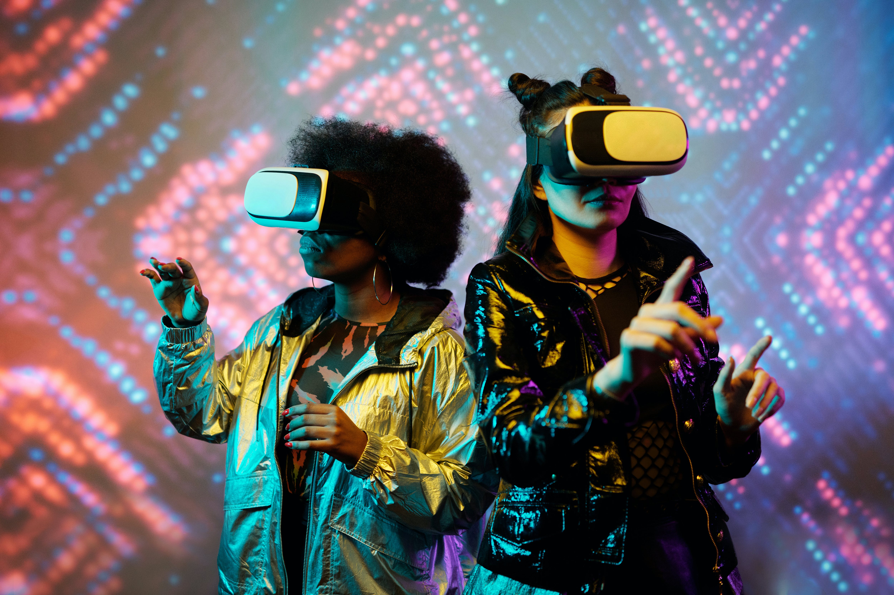

Introduction
Chess, often referred to as the "royal game," has been a timeless classic that has captivated minds and challenged strategists for centuries. As we stand on the cusp of a new era, the future of chess is poised to undergo a transformative journey, driven by technology, innovation, and a global community of enthusiasts. In this article, we explore the potential avenues that could shape the future of chess, from artificial intelligence to online platforms and beyond.
AI Integration: Human vs. Machine Collaboration
One of the most significant developments in the world of chess is the integration of artificial intelligence (AI). Advanced chess engines, like Stockfish and AlphaZero, have already surpassed human grandmasters in terms of strategic analysis and decision-making. The future may witness a hybrid chess where human players collaborate with AI counterparts, creating a new dimension in competitive play. This fusion of human creativity and machine precision could redefine the very essence of chess strategy.

Virtual Reality Chess: Immersive Gaming Experience
Imagine stepping onto a virtual chessboard, facing opponents from around the globe while immersed in a 3D environment. Virtual Reality (VR) technology has the potential to revolutionize the way we play and experience chess. Players can engage in matches as if they were sitting across from their opponents in a real-world setting, adding a layer of realism and excitement to the game. VR chess could also open up opportunities for creative board designs and customizable themes, providing players with a truly unique gaming experience.

Global Online Tournaments: Breaking Down Geographical Barriers
The internet has already played a pivotal role in connecting chess enthusiasts globally, but the future promises even more expansive online tournaments. With the rise of streaming platforms and online chess communities, players from diverse backgrounds can participate in tournaments without the constraints of geography. This inclusivity fosters a richer and more diverse chess culture, as enthusiasts from different continents can compete and collaborate, sharing their unique approaches to the game.

AI Chess Teachers: Personalized Learning for Every Player
AI is not only a competitor but also a potential mentor. Chess engines could evolve into personalized coaches, analyzing individual playing styles, strengths, and weaknesses. By providing tailored feedback and strategic insights, AI chess teachers could accelerate the learning curve for players of all levels. This individualized approach could democratize access to high-quality chess training, making it more accessible to aspiring players worldwide.

Chess as an Esport: The Spectacle of Mind Sports
As esports continue to gain mainstream popularity, chess could find its place among the competitive gaming landscape. With engaging commentary, dynamic camera angles, and immersive visuals, chess matches can be transformed into thrilling spectacles that captivate audiences. The integration of augmented reality (AR) could enhance the viewing experience, offering viewers real-time insights into players' thought processes and strategies.
Conclusion
The future of chess holds immense promise, driven by the fusion of human intellect and cutting-edge technology. From AI collaboration to virtual reality experiences and global online tournaments, the royal game is evolving into a dynamic, inclusive, and tech-driven phenomenon. As we embrace these advancements, the essence of chess remains unchanged – a game that challenges the mind, fosters creativity, and brings people together across the digital and physical realms. The journey ahead is one of innovation, strategic brilliance, and the continued celebration of the timeless beauty of chess.